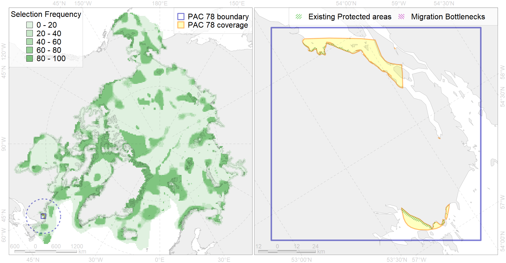

Region 78
Region 78
“ArcNet” scenario 33 achievement for region 78.
Use Accenter for advanced mode.

0
CFs inside of Region completely
0
CFs inside of Region at quarter
0
Complete-targets achievement by Region
1
Half-targets achievement by Region
| CF | Name | Target Achievement for Region | Proportion of Target Achievement in Region | Amount Proportion in Region |
|---|---|---|---|---|
| 8022 | Labrador LME estuaries | 61.6% | 49.9% | 15.1% |
| 2012 | Bearded seal whelping areas in the Labrador area | 2.2% | 1.4% | 0.7% |
| 6072 | King eider (Somateria spectabilis) Canadian winetring grounds | 1.1% | 0.9% | 0.6% |
| 2050 | Ringed seal whelping areas in the Labrador region | 0.7% | 0.7% | 0.3% |
| 3132 | polynya Labrador | 0.7% | 0.2% | 0.2% |
| 7145 | III.2.1.4. Ungava -Labradoran shelf | 2.7% | 0.4% | 0.2% |
| 4031 | Feeding area of the Brook Trout (Salvelinus fontinalis) (F 29) | 0.9% | 0.4% | 0.2% |
| 6015 | Black guillemot (Cepphus grylle mandti) breeding grounds | 1.0% | 0.2% | 0.1% |
| 6041 | Ivory gull (Pagophila eburnea) postbreeding grounds in the Canadian Arctic | 0.3% | 0.1% | 0.1% |
| 6101 | 6101 Uriaalge aalge breeding colonies | 0.2% | 0.1% | 0.1% |
| 4085 | Fish zoogeography, Arctic Region, Subarctic Transitional-Atlantic Province, Labrador – S Greenland District | 0.5% | 0.1% | 0.1% |
| 4028 | Feeding/migration area of the Atlantic salmon (Salmo salar) American populations (F27) | 0.3% | 0.1% | 0.0% |
| 4056 | Distribution of the American Plaice (Hippoglossoides platessoides) (F 47), European populations | 1.0% | 0.1% | 0.0% |
| 2019 | Harbour seal range in the North Atlantic region | 0.4% | 0.1% | 0.0% |
| 6076 | Common murre (Uria aalge aalge) wintering grounds | 0.1% | 0.1% | 0.0% |
| 4029 | Feeding area of the Arctic charr (Salvelinus alpinus), anadromous populations (F28) | 0.1% | 0.0% | 0.0% |
| 4055 | Range of the Shorthorn Sculpin (Myoxocephalus scorpius) (F 46), American populations | 0.6% | 0.0% | 0.0% |
| 4049 | Range of the Haddock (Melanogrammus aeglefinus) (F 42) | 0.3% | 0.0% | 0.0% |
| 4048 | Feeding/nursery area of the ogac (Gadus ogac ) (F 41) | 0.1% | 0.0% | 0.0% |
| 6083 | Thick-billed murre (Uria lomvia lomvia) wintering grounds | 0.0% | 0.0% | 0.0% |
| 4003 | Range of the Atlantic Capelin (Mallotus villosus) (F10) | 0.3% | 0.0% | 0.0% |
| 4017 | Feeding/ migration area of the Greenland Shark (Somniosus microcephalus) (F1) | 0.0% | 0.0% | 0.0% |
| 4046 | Range of the Thorny Skate (Amblyraja radiata) (F 3) | 0.1% | 0.0% | 0.0% |
| 4045 | Feeding/migration area of the Pink Salmon (Oncorhynchus gorbuscha), native distribution (F23) | 0.1% | 0.0% | 0.0% |
| 4059 | Range of the Greenland Halibut (Reinhardtius hippoglossoides) (F 49) | 0.3% | 0.0% | 0.0% |
| 3023 | Marginal Ice Zone distribution in April in the Labrador Sea LME | 0.0% | 0.0% | 0.0% |
| 4041 | Range of the Polar Cod (Boreogadus saida) (F35) | 0.0% | 0.0% | 0.0% |
| 6002 | Little Auk (Alle alle alle) winetring grounds | 0.0% | 0.0% | 0.0% |